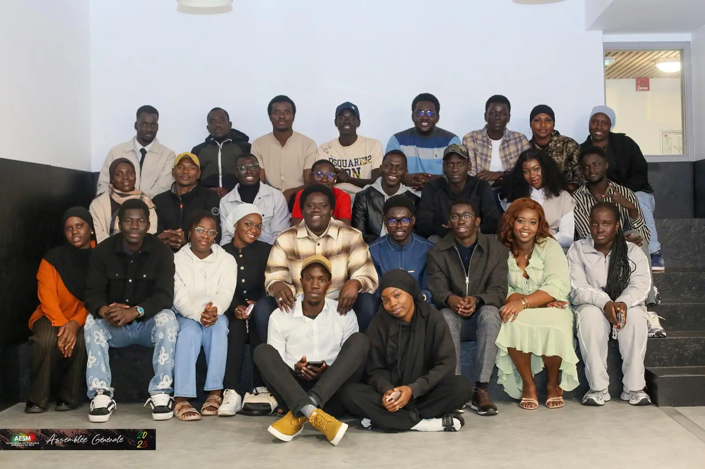

Manteaux, pulls, écharpes : la collecte d'hiver avec l'ASM
Retour sur la collecte lancée fin septembre et distribuée le jour de l'assemblée générale.
Lire l'articleVie associative
Le 2 novembre, la salle de l'île du Saulcy s'est remplie bien avant l'heure annoncée. À l'ordre du jour : un bilan de mandat, des comptes à faire valider et une élection. Un an, presque jour pour jour, après avoir succédé à Khadim Diallo, Mamadou Seye présentait son dernier rapport comme président de l'AESM. Face à lui, dans la salle, celui qui allait lui succéder : Oumar Ka Thiam.
Une assemblée générale n'a rien d'un spectacle. Des chiffres, des votes à main levée, des remerciements qu'on essaie de ne pas oublier. Mais c'est le moment où l'association rend des comptes à ceux qui la font vivre : les adhérents à jour de cotisation, venus vérifier que l'argent collecté dans l'année a servi à quelque chose de concret.

L'assemblée générale a permis de faire le point sur l'année écoulée, de valider le bilan du bureau sortant et d'organiser la passation. Derrière les documents présentés, il y a surtout l'accueil de 47 nouveaux étudiants, l'accompagnement dans leurs démarches et une association portée au quotidien par ses commissions et ses bénévoles.
Derrière cette passation, il y a un mandat porté par 34 membres répartis dans les commissions du bureau. Sur le plan social, 47 nouveaux étudiants ont été accueillis et accompagnés au fil de l'année, de leur arrivée à Metz jusqu'à leur installation — dossiers de logement, attestations d'hébergement, premiers repères sur le campus. C'est un travail qui ne se voit pas sur une photo d'assemblée générale, mais qui occupe une bonne partie du temps de l'association le reste de l'année.
Mamadou Seye ne quitte pas le mouvement étudiant sénégalais : il devient représentant du président de la FESSEF, la Fédération des Étudiants et Stagiaires Sénégalais de France, pour la région Grand Est. Un rôle différent, à une autre échelle, mais qui reste dans le même prolongement.
Le nouveau président, Oumar Ka Thiam, n'arrive pas en terrain inconnu : il faisait déjà partie de la commission culturelle et sportive du bureau sortant. Il a été élu aux côtés de Fousseyni Touré, vice-président, Babacar Dramé, secrétaire général, et Mariama Siby, trésorière. Ce sont eux qui portent désormais le mandat 2025-2026.

L'assemblée générale n'a pas été qu'une affaire de chiffres et de votes. Depuis fin septembre, l'AESM collectait des vêtements d'hiver avec l'ASM, l'Association des Sénégalais de la Moselle. Manteaux, pulls, chaussures, écharpes : tout ce qui avait été rassemblé au fil des semaines a été distribué ce 2 novembre, à la sortie de la séance. On y revient plus en détail dans un autre article, mais le timing n'avait rien d'un hasard : réunir la communauté un même jour pour voter, faire les comptes et se rendre utile, c'est aussi une manière de dire ce que l'association essaie d'être.

Le bureau 2025-2026 est en fonction depuis ce jour-là. La suite s'écrira au fil des événements — et des prochaines actualités de l'association.
À lire aussi
Retour sur la collecte lancée fin septembre et distribuée le jour de l'assemblée générale.
Lire l'article
Logement, CAF, préfecture, banque, inscription : l'ordre dans lequel s'y prendre.
Lire l'article